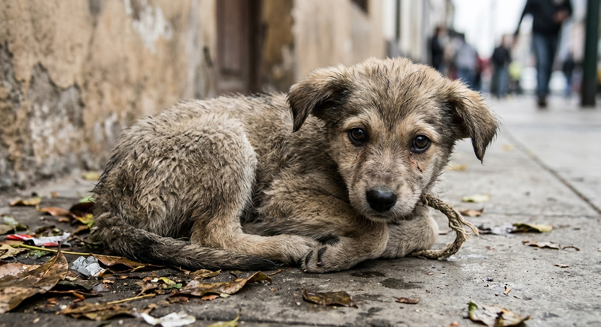

Cada compra ayuda a un perro o gato sin hogar
Vendemos postres, artículos y kits de cuidado. Una parte de lo que ganamos se destina a la alimentación, la salud y la adopción de animales abandonados.

Eliges un producto
Postres y artículos hechos con una causa.
Pides por WhatsApp
Sin pasarela de pago: te atendemos directamente.
Ayudas a un animal
Parte de la ganancia va a comida, atención veterinaria y adopciones.
¿A dónde va tu dinero?
Así repartimos lo que ganamos con cada venta.
Tienda solidaria
Elige tu producto y pídelo por WhatsApp. Te confirmamos disponibilidad, entrega y forma de pago.
Adopciones
Ellos buscan un hogar. Conoce su historia y cuéntanos si quieres adoptar.
Solicitar una adopción
Llena el formulario y se abrirá WhatsApp con tu solicitud lista para enviar.
Cómo ayudar
No hace falta comprar para ayudar. Elige la forma que mejor te quede.
Donar
Yape o Plin: . Envíanos tu comprobante por WhatsApp y lo registramos.
Difundir
Comparte los perfiles de adopción. Un compartido puede ser un hogar.
Transparencia
De cada venta, esto es lo que hacemos con el dinero.
Nosotros
En el Perú hay millones de animales en situación de calle, y los refugios y rescatistas casi nunca tienen dinero suficiente para alimentarlos y atenderlos. Huellas al rescate nació para cambiar eso: una tienda con causa donde comprar un postre también es ayudar a un animal.
Misión
Reunir recursos para alimentar, curar y encontrar hogar a perros y gatos abandonados, involucrando a las personas de forma sencilla.
Visión
Ser un emprendimiento solidario de referencia en Lima, que reduzca el abandono animal y promueva la tenencia responsable.
ODS 11: Ciudades y comunidades sostenibles
Contribuimos a ciudades más seguras e inclusivas, con comunidades conscientes del bienestar animal.